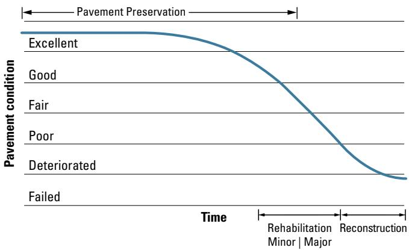
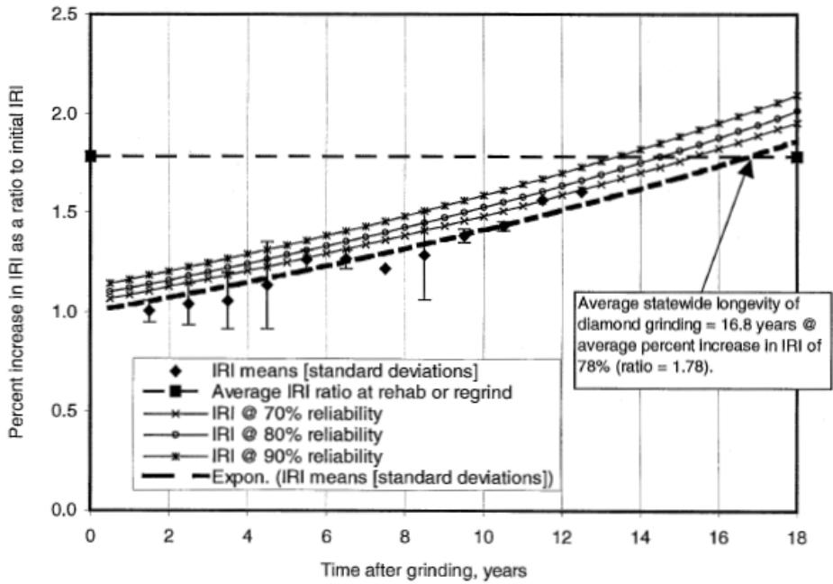
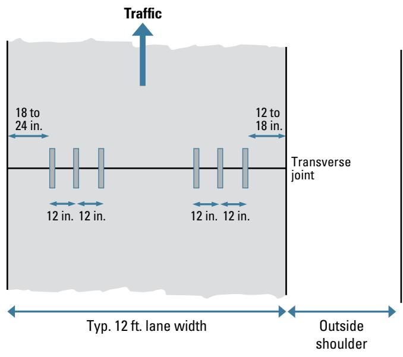

Cost-Effective Pavement Preservation Strategy
The Cost‑Effective Pavement Preservation Strategy is a systematic decision‑making process used to select the most appropriate concrete‑pavement preservation treatment—or combination of treatments—for a given roadway segment[3][4]. It begins with a thorough pavement evaluation that documents observed deficiencies, structural capacity and project‑specific constraints such as funding, geometric limits, traffic impacts and environmental considerations, ensuring the data are current (within one to two years) before alternatives are screened[2][3]. Candidate strategies—including periodic diamond grinding, DBR applications, overlays or hybrid options—are then compared using quantitative cost‑effectiveness tools such as benefit‑cost ratios or life‑cycle cost analyses, and the highest‑ranking option is selected only after constraints and stakeholder preferences are applied through a weighted decision matrix[3][4]. The resulting treatment plan must satisfy performance, functional, budgetary, network‑priority and environmental requirements while delivering the greatest net benefit over the analysis horizon[3][4].
Sources (4)
Purpose and decision context
The Cost‑Effective Pavement Preservation Strategy is used to decide which concrete‑pavement preservation treatment—or combination of treatments—should be chosen as the preferred alternative for a given roadway segment or project. It guides engineers to evaluate observed deficiencies, identify all project‑specific constraints and selection factors, and then compare candidate strategies on overall cost‑effectiveness, using either benefit‑cost ratios or life‑cycle cost analyses, before selecting the treatment plan that best meets performance, functional, budgetary, network‑priority, and environmental requirements. [3][4]
The figure below illustrates how to determine an appropriate concrete overlay solution based on existing pavement conditions and the necessary preliminary repairs.
 Decision flowchart for selecting concrete overlay treatments based on pavement condition and repair feasibility. [3]
Decision flowchart for selecting concrete overlay treatments based on pavement condition and repair feasibility. [3]
The figure displays a decision-making process that categorizes existing pavement into four conditions: Good, Fair, Poor, and Deteriorated. If existing deficiencies cannot be addressed cost-effectively using these techniques, the process directs the user toward reconstruction.
[3] — Ch. 12 (pp. 267–276); [4] — Ch. 1 (pp. 17–18), Ch. 11 (pp. 214–223)
The Cost‑Effective Pavement Preservation Strategy addresses the problem of converting identified pavement distress into a viable treatment plan while respecting limited resources. It starts with “The primary goal of this activity is to identify the deficiencies in the pavement,” then follows “the selection of an appropriate preservation or rehabilitation treatment for a given concrete pavement project requires a systematic, step‑by‑step approach that considers all relevant factors.” After feasible alternatives are defined, it conducts “Assess the cost‑effectiveness of alternative treatment strategies.” to ensure the chosen solution meets performance objectives within functional and monetary constraints. [3][4]
[3] — Ch. 12 (pp. 267–276); [4] — Ch. 1 (pp. 17–18), Ch. 11 (pp. 214–223)
Scope and applicability
The Cost‑Effective Pavement Preservation Strategy is appropriate for concrete‑pavement projects that are still in the evaluation phase and have been screened as viable preservation candidates using pavement management data, with a field assessment confirming that deficiencies are limited to functional issues or localized structural problems. It applies after an initial pavement evaluation has identified the specific distresses and their causes, positioning the project at the treatment‑strategy selection stage where multiple alternatives—such as preservation methods (e.g., PDR, FDR, diamond grinding, joint resealing), a thin overlay, or full reconstruction—are being compared. At this point agencies conduct a cost‑effectiveness analysis to determine the most appropriate preservation treatment before proceeding to more extensive rehabilitation. [3][4]
The following figure illustrates the general applicability of these preservation, rehabilitation, and reconstruction activities within the broader context of pavement management.

General applicability of pavement preservation, rehabilitation, and reconstruction activities over time. [3]The figure displays a curve plotting pavement condition against time, illustrating the relative timing for applying different maintenance strategies. It visually defines the “Pavement Preservation” phase as occurring during the early years of the constructed pavement while it is still in good to very good condition, before the curve drops into rehabilitation and reconstruction zones.
[3] — Ch. 12 (pp. 267–276); [4] — Ch. 11 (pp. 214–215)
When the diagnostic assessment shows that deficiencies extend beyond localized functional or structural problems to widespread (global) structural deterioration or material degradation, a cost‑effective preservation strategy is deemed unsuitable; as one source notes, “if more global structural or material problems exist, then the pavement section is more likely suited for a structural overlay treatment or perhaps even complete reconstruction,” while another states, “If more global structural or material problems exist, then the pavement section is more likely suited for an asphalt or concrete overlay, or perhaps even complete reconstruction in the most severe case.” Even when preservation yields the lowest life‑cycle cost, it must be set aside if project‑specific constraints make implementation infeasible. The guides list such constraints, including “Available funding,” “Geometric restrictions,” “Lane closure time,” and broader impacts such as “Traffic level” and “User impacts during construction (e.g., lane closure time, traffic disruption/congestion, and safety).” Environmental considerations are also cited: “Environmental impact (e.g., energy demands in materials production and greenhouse gas emissions during construction)” and “Environmental impact (e.g., contamination generated during construction work).” The guides further warn that reliance on preservation is questionable when the underlying data are outdated; “This is particularly true if the most recent data in the pavement management database are more than 1 or 2 years old.” Both sources caution that cost‑effectiveness or life‑cycle cost analyses alone do not guarantee the optimal alternative, stating that “cost‑effectiveness analysis by itself does not necessarily identify the optimal alternative” and “A detailed LCCA can be one part of the decision‑making process, but by itself does not necessarily identify the most optimal alternative.” Moreover, “constraints identified in Step 4 may override the results of the cost‑effectiveness analysis” and “some of the selection factors and constraints identified in step 4 may over‑ride the results of the LCCA,” while noting that “The lowest life‑cycle cost option may not be practical when other considerations, such as available budgets, network priorities, or environmental factors are taken into account.” [3][4]
[3] — Ch. 12 (pp. 267–274); [4] — Ch. 11 (pp. 214–223)
Information needs
The strategy starts with a thorough pavement evaluation that provides condition data; “Historical condition data in the form of overall condition indicators and individual distress parameters can be obtained from an agency’s pavement management database”. Structural assessments, such as evaluating the structural capacity of the existing concrete overlay, including the underlying pavement, subbase, and base layers, must be performed to confirm a stable platform for any new treatment; “The structural capacity of the existing concrete overlay, including the underlying pavement, subbase, and base layers, must be evaluated to ensure that the structure can function as a stable platform for the new overlay without experiencing excessive deformation or failure.” Site information includes geometric restrictions, slope and drainage characteristics, utility adjustment needs, and permissible lane‑closure duration. Cost considerations require knowledge of funding; “Available funding.” and all material, construction, traffic‑control, and life‑cycle expenses. Traffic inputs such as current traffic level and network priorities guide where preservation resources are allocated. Environmental factors encompass environmental impact; “Environmental impact (e.g., contamination generated during construction work).” together with broader resource‑conservation concerns. Finally, stakeholder input—agency and customer preferences, utility owner coordination, and compliance with accessibility standards—is incorporated before feasible treatment alternatives are ranked. [2][3][4]
[2] — Key Considerations (p. 37); [3] — Ch. 12 (pp. 271–276); [4] — Ch. 11 (pp. 219–223)
Information used to select a cost‑effective pavement preservation strategy must be both accurate and up‑to‑date; data that are older than about one to two years are considered insufficient for confirming suitability. A complete picture requires a thorough pavement evaluation that identifies all deficiencies, their causes, feasible treatments, and any project constraints before the alternatives can be compared on cost‑effectiveness. Only with this current, accurate, and comprehensive dataset can the most appropriate preservation treatment be reliably chosen. [3]
[3] — Ch. 12 (p. 267)
Alternatives
The feasible treatment alternatives that should be compared include a single‑treatment plan of periodic diamond grinding every 8 to 12 years (or “diamond grinding applied on an 8‑to‑10 year cycle”), a one‑time application of DBR followed by periodic diamond grinding, the placement of an unbonded concrete overlay with a 25-year service life, and hybrid options such as combined DBR with periodic diamond grinding. Additional preservation actions that may form separate strategies are joint resealing, full‑depth repairs, partial‑depth repairs, retrofitted load transfer devices, dowel‑bar retrofitting, and slab stabilization; these activities are typically performed prior to any diamond‑grinding step. The set of alternatives can also be broadened to include a thin concrete overlay, full reconstruction, or a “do nothing” baseline for reference. Each distinct combination or timing scenario is treated as an individual treatment strategy and evaluated through life‑cycle cost analysis (LCCA) and benefit‑cost ratio (BCR) comparisons to identify the most cost‑effective solution. [3][4]
The following figure illustrates the condition of diamond ground pavements in California to provide context for these preservation strategies.

Percent increase in IRI as a ratio to initial IRI over time after grinding. [4]The figure plots the percent increase in International Roughness Index (IRI) relative to the initial value against the time elapsed since diamond grinding, showing an upward trend where roughness increases over the years. This data supports the selection of preservation treatments by quantifying how long a specific strategy maintains pavement smoothness before rehabilitation is required.
[3] — Ch. 12 (pp. 271–276); [4] — Ch. 11 (pp. 214–223)
Decision criteria
Across the guides, the controlling criteria for selecting a cost‑effective pavement preservation strategy are drawn from the project‑specific constraints that filter feasible treatments. Cost considerations dominate, as “It is essential to evaluate the costs associated with these additional requirements” and “Available funding” together with the requirement that “Competing strategies can be objectively compared by considering the overall life-cycle cost associated with each.” Safety of users and workers is another core control, reflected in “Transition zones. Smooth transitions between the existing pavement grade and the new overlay grade are essential for safety and ride quality” and “Traffic safety during construction.” Schedule impacts, especially lane‑closure duration, are also required controls: “Lane closure time” and “construction‑schedule impacts such as lane closures and traffic disruption.” Sustainability and environmental stewardship appear in both “sustainability concerns reflected in environmental impact and natural‑resource conservation” and “Environmental impact (e.g., contamination generated during construction work).” Public impact, captured through user experiences during construction and service, is highlighted as a distinct factor: “overall public impact captured through user experiences during both construction and service.” Performance benefits—including roughness, PCI, and durability—are identified as a primary economic driver: “Consequently, cost, performance, sustainability, and public impact are the controlling criteria for selecting a cost‑effective pavement preservation strategy.” Finally, accessibility for pedestrians, cyclists, and persons with disabilities is emphasized: “Accessibility. Changes in pavement grade can affect accessibility for pedestrians, cyclists, and individuals with disabilities.” [2][3][4]
[2] — Key Considerations (p. 37); [3] — Ch. 12 (pp. 271–276); [4] — Ch. 11 (pp. 219–223)
Competing criteria are first screened against any identified external constraints—budget limits, network priorities, environmental restrictions, or other functional requirements—so that alternatives violating those constraints are eliminated. The remaining feasible treatment combinations are then evaluated primarily through an economic metric: either a life‑cycle benefit‑cost ratio (BCR) or a life‑cycle cost analysis (LCCA). The guides state that “the strategy with the highest BCR is deemed the most cost‑effective” and that “the primary weighting should be given to the strategy’s overall life‑cycle cost; this single metric allows an objective comparison among competing alternatives.” However, the economic result alone does not guarantee selection; “the highest BCR option may not be practical when other considerations, such as available budget, network priorities, environmental factors, and agency and customer preferences, are considered,” and “the lowest life‑cycle cost option may not be practical when other considerations, such as available budgets, network priorities, or environmental factors are taken into account.” To incorporate noneconomic factors—such as continuity of adjacent pavements, lane continuity, local preference, or environmental and social impacts—a weighted decision matrix is used. Each factor “is assigned a weighting that reflects the agency’s perception of the importance of that factor,” and the weighted scores are summed with the economic score to identify the preferred alternative. Thus, across sources the prioritization sequence is: (1) eliminate alternatives that violate external constraints; (2) rank remaining options by the dominant economic metric (BCR or LCCA); and (3) adjust the ranking through a decision matrix that balances additional functional and stakeholder considerations. [3][4]
[3] — Ch. 12 (pp. 272–276); [4] — Ch. 11 (pp. 219–223)
Analysis methods and tools
The Cost‑Effective Pavement Preservation Strategy relies on a multi‑step evaluation framework that begins with a comprehensive pavement assessment. Existing deficiencies are documented through condition surveys and verified for structural integrity using nondestructive testing, while ride quality and safety are quantified by roughness and friction assessments. Candidate treatments are then screened and compared using quantitative cost‑effectiveness tools. Benefit‑cost ratio (BCR) analysis is applied to quantify performance benefits against costs, and the associated costs are derived from life‑cycle cost analysis (LCCA). In addition, project‑level optimization methods such as dollars‑per‑lane‑mile‑per‑year (DLMY) analysis or the remaining service interval (RSI) framework can be used to rank alternatives under funding constraints. After these analyses, treatments are entered into a strategy decision matrix where each selection factor is weighted, rating scores are multiplied by the weightings, and the weighted totals are summed to identify the highest‑scoring preservation option. [3][4]
[3] — Ch. 12 (pp. 272–276); [4] — Ch. 1 (pp. 17–18), Ch. 11 (pp. 214–223)
A cost‑effective pavement preservation strategy rests on a set of core assumptions that are common across guidance sources. It presumes that the pavement‑management database accurately reflects current conditions and that any lag in data collection is minimal; otherwise, outdated information can misrepresent existing distress. The approach also assumes that a comprehensive field inspection will uncover all relevant deficiencies and their underlying causes, providing the basis for identifying constraints and key treatment‑selection factors. Reliable historic condition data are expected to be available for constructing performance curves, which are then used to forecast future behavior of alternative treatments. In addition, the strategy presumes that project‑specific constraints such as funding levels, anticipated future maintenance needs, geometric limitations, and permissible lane‑closure durations can be known or reasonably estimated, and that life‑cycle cost analysis (LCCA) yields dependable cost and performance estimates.
Uncertainties arise from multiple sources. Data age or incompleteness may lead to incorrect treatment matching. Traffic volume forecasts, climate conditions, and future maintenance requirements are inherently variable and affect projected cost‑effectiveness. Geometric limitations, construction‑phase impacts (including lane closures and safety considerations), environmental effects of material production, resource‑conservation goals, service‑phase performance criteria (smoothness, friction, noise), worker safety, traffic‑management options, equipment and material availability, supplier competition, and agency policy constraints further compound uncertainty. Performance curves often need to be extrapolated beyond observed time or traffic ranges, introducing variability into benefit‑cost ratios. Timing of future treatments is frequently derived from historical records or expert judgment, adding another layer of uncertainty. Errors in estimating material, construction, traffic‑control, and other costs propagate through present‑value calculations, while the selection of discount rates influences overall assessments. Finally, budget limits, shifting network priorities, and environmental considerations can override the lowest‑cost alternative identified by LCCA. [3][4]
[3] — Ch. 12 (pp. 267–274); [4] — Ch. 11 (pp. 219–223)
Stakeholders and constraints
The agency responsible for the roadway provides the input for the preservation‑strategy process through its policy and preference attributes—such as continuity of adjacent pavements, continuity of adjacent lanes, and local preference. Those inputs are entered into a strategy decision matrix where the agency assigns weightings that reflect its perception of each factor’s importance, rates each treatment against the factors, and sums the weighted scores. The treatment achieving the highest total score is identified as the preferred option, and the agency’s decision authority formally approves that selection. [3]
[3] — Ch. 12 (pp. 274–275)
The selection of a cost‑effective pavement preservation treatment is bounded by a set of permits, standards, policies, funding rules, and design requirements that must be identified early in the project. Structural capacity of existing overlays must be verified through coring or falling weight deflectometer testing, and any increase in pavement grade triggers compliance with accessibility standards such as the ADA and requires coordination with utility owners and adjustments to slopes, drainage, and transition zones. Agency‑level policies impose performance and design limits including expected traffic levels, climate conditions, geometric restrictions, lane‑closure time, continuity of adjacent pavements and lanes, and local environmental goals. All treatments must satisfy life‑cycle cost analysis procedures mandated by state DOTs, and the use of LCP in risk‑based asset management plans is required. Funding constraints are expressed through dollars per lane‑mile‑year (DLMY) analysis, which directs selection toward alternatives that deliver the greatest lane‑mile years per dollar. The RSI framework permits any feasible preservation or rehabilitation option provided that established performance constraints and minimum acceptable level‑of‑service criteria are met. [2][3][4]
[2] — Key Considerations (p. 37); [3] — Ch. 12 (pp. 271–275); [4] — Ch. 11 (pp. 219–223)
Timing and implementation
The guides state that the decision on a cost‑effective pavement preservation strategy is made after the comprehensive evaluation steps have been completed – once the pavement has been assessed, deficiencies identified, causes determined, and a list of possible effective treatments compiled. At this stage the alternatives are screened against project‑specific constraints: “After compiling a list of possible effective treatments under Step 3 and before proceeding further in the treatment strategy selection process” the infeasible options are removed. The remaining feasible strategies are then subjected to a cost‑effectiveness analysis, as directed by “Step 6: Assess the Cost‑Effectiveness of Alternative Treatment Strategies” and the instruction to “Assess the cost‑effectiveness of alternative treatment strategies.” Some sources also require a life‑cycle cost analysis (“After applying any outside constraints, feasible treatment strategies … are determined and associated costs are objectively compared by conducting a LCCA (if necessary)”). After comparing benefit‑cost ratios or similar metrics, the preferred alternative is chosen: “Select preferred strategy,” “Step 7. Select Preferred Strategy,” and finally “the most appropriate treatment strategy is selected using a strategy decision matrix” that incorporates economic, environmental, social, and functional considerations. [3][4]
[3] — Ch. 12 (pp. 267–276); [4] — Ch. 11 (pp. 214–223)
Action is triggered when the pavement management database contains data that are “more than 1 or 2 years old,” which prompts a fresh pavement evaluation; the evaluation itself becomes the trigger for the preservation decision process. The “primary goal of this activity is to identify the deficiencies in the pavement,” and if the existing pavement is exhibiting only functional deficiencies or localized structural problems, those observed deficiencies initiate the step‑by‑step selection of cost‑effective concrete pavement preservation treatments (“if the existing pavement is exhibiting only functional deficiencies or localized structural problems, the observed deficiencies can most likely be addressed with one or more concrete pavement preservation treatments”). Action is also initiated when “agencies also select the lower condition threshold at which major rehabilitation or reconstruction is required,” and whenever “When cost‑effectiveness considerations may come into play, however, is when there are competing treatment strategies identified” so that a benefit‑cost analysis can be performed within the selected analysis period. [3]
[3] — Ch. 12 (p. 267)
To implement the chosen preservation option, agencies must secure the required treatment materials and equipment—diamond‑grinding machinery, DBR material, concrete overlay mix, and any full‑depth patching resources—and allocate traffic‑control provisions. The cost analysis must therefore “include all costs associated with these treatment strategies, including the materials, construction/installation, traffic control, and so on.” Scheduling follows the defined treatment strategy, which is a plan that specifies when each intervention occurs over the project horizon. For example, the option may call for “periodic diamond grinding every 8 to 12 years,” a one‑time DBR application followed by those same grinding cycles, or a single unbonded concrete overlay intended to provide a 25‑year service life. The timing of these actions is derived from historic condition and treatment records or expert judgment, ensuring the preservation plan aligns with the targeted remaining service interval. [3]
The typical configuration for a diamond grinding and overlay treatment is illustrated in the following figure.

Typical DBR configuration showing dowel bar placement in a concrete pavement lane. [3]The figure displays the geometric layout of a typical Dowel Bar Retrofit (DBR) installation, illustrating three vertical bars placed within each wheel path across a transverse joint. This configuration is used to prevent or minimize faulting in concrete pavements, which is a primary objective of the Cost-Effective Pavement Preservation Strategy.
[3] — Ch. 12 (pp. 271–274)
Outcomes and follow-up
The guides define success as the development and implementation of a treatment strategy that fully resolves identified pavement distress, complies with all functional, monetary, environmental and social constraints, and yields the greatest net benefit over the analysis horizon. Success is demonstrated when the team can reliably follow the systematic selection workflow—articulating each step, listing every life‑cycle cost component, and accounting for project‑specific influences—and produces a feasible plan that specifies what treatments to apply, their timing (concurrent or separate), and shows the lowest total life‑cycle cost among alternatives. Measurement is performed through quantitative analyses: a benefit‑cost ratio (BCR) analysis evaluates performance benefits against costs, and a life‑cycle cost analysis (LCCA) objectively compares total costs of competing strategies; the option with the highest BCR and the smallest LCC is recorded as the successful outcome. Additional verification comes from knowledge checks and practical exercises that require participants to describe the selection process, develop an activity inventory, and confirm that the chosen sequence maximizes effectiveness while protecting recent repairs. [3][4]
[3] — Ch. 12 (pp. 272–276); [4] — Ch. 11 (pp. 214–223)
Results should be tracked through the agency’s pavement‑management database, continuously recording condition indicators, roughness and friction measurements that feed performance curves for each treatment option. All cost elements—materials, construction, traffic control, etc.—are entered into a life‑cycle cost analysis that uses the same analysis period and timing as the benefit calculation, producing a benefit‑cost ratio for every alternative. The computed BCRs are documented in a comparative report; the alternative with the highest ratio is selected, and the observed post‑implementation performance is fed back into the database to refine future service‑life estimates and improve subsequent strategy selections. [3]
[3] — Ch. 12 (pp. 272–274)
References
- Concrete Overlay Repair and Replacement Strategies ·
concrete_overlay_repair_strategies_guide_web - Concrete Pavement Preservation Guide (Third Edition) ·
concrete_pvmt_preservation_guide_3rd_edition_web - Concrete Pavement Preservation Workshop ·
preservation_reference_manual